Part of learning computer science and software development is learning how to program simple web applications using PHP, and also more complex interactive database applications using PHP with MySQL (see an example of this on my SQL page).
An example of a simple web application using PHP is the following game of “Rock, Paper, Scissors.”
To execute the game, I uploaded the following PHP files to a local web server via XAMPP:
index.php
login.php
game.php
bootstrap.php
Additionally, I included basic styling using a file named starter-template.css and a standard README.md.
index.php
The index.php page introduces the user to the game. It displays what the game is about and offers a basic introduction to the site. This appears as the following in a web browser: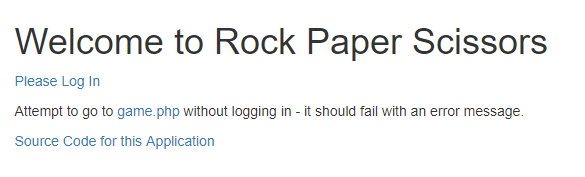
This page summarizes that one must be logged in to access the game. If you click “game.php” from this screen, the following message is displayed:
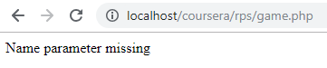
You may view the full index.php code here:
<!DOCTYPE html> <html> <head> <title>Diane Krauthamer - Rock Paper Scissors</title> <?php require_once "bootstrap.php"; ?> </head> <body> <div class="container"> <h1>Welcome to Rock Paper Scissors</h1> <p> <a href="login.php">Please Log In</a> </p> <p> Attempt to go to <a href="game.php">game.php</a> without logging in - it should fail with an error message. <p> <a href="http://www.wa4e.com/code/rps.zip" target="_blank">Source Code for this Application</a> </p> </div> </body>
login.php
The login.php page creates a login screen for users to enter their name and password. The username can be anything, and the password must be “php123.” The “Log in” button on this screen submits the form data using method=”POST.” The username and password are then posted to the server, thus executing the request/response cycle.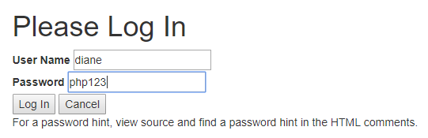
On the login page a “salted hash” is used for the password. To do this, I used the MD5 hashing algorithm to create created a $stored_hash variable. This is the MD5 of the salt concatenated with the plaintext of php123, and was computed using the following PHP:
$md5 = hash('md5', 'XyZzy12*_php123')
The following shows this page, as well as an example of a successful login: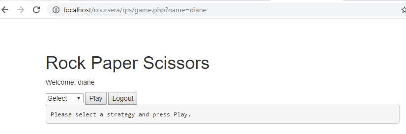
The following shows what happens when the incorrect password is entered:
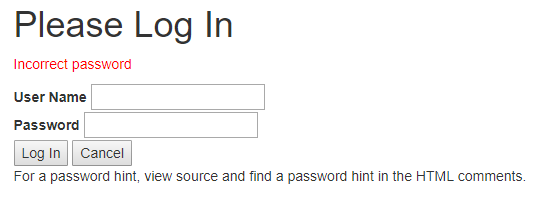
In addition to checking the password, the form contains error handling to check if data was entered at all, or if the field was left blank. For instance, if the user leaves the field blank, the following appears:
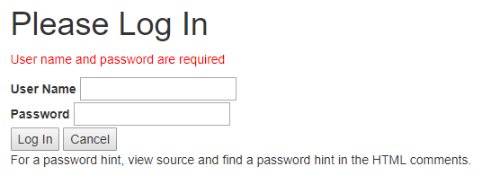
The full code for this login.php page appears below:
<?php // Do not put any HTML above this line if ( isset($_POST['cancel'] ) ) { // Redirect the browser to game.php header("Location: index.php"); return; } $salt = 'XyZzy12*_'; $stored_hash = '1a52e17fa899cf40fb04cfc42e6352f1'; // Pw is php123 $failure = false; // If we have no POST data // Check to see if we have some POST data, if we do process it if ( isset($_POST['who']) && isset($_POST['pass']) ) { if ( strlen($_POST['who']) < 1 || strlen($_POST['pass']) < 1 ) { $failure = "User name and password are required"; } else { $check = hash('md5', $salt.$_POST['pass']); if ( $check == $stored_hash ) { // Redirect the browser to game.php header("Location: game.php?name=".urlencode($_POST['who'])); return; } else { $failure = "Incorrect password"; } } } // Fall through into the View ?> <!DOCTYPE html> <html> <head> <?php require_once "bootstrap.php"; ?> <title>Diane Krauthamer's Login Page</title> </head> <body> <div class="container"> <h1>Please Log Inlt;/h1> <?php if ( $failure !== false ) { // Look closely at the use of single and double quotes echo('<p style="color: red;">'.htmlentities($failure)."</p>\n"); } ?> <form method="POST"> <label for="nam">User Name</label> <input type="text" name="who" id="nam"><br/> <label for="id_1723">Password</label> <input type="text" name="pass" id="id_1723"><br/> <input type="submit" value="Log In"> <input type="submit" name="cancel" value="Cancel"> </form> <p> For a password hint, view source and find a password hint in the HTML comments. <!-- Hint: The password is the four character sound a cat makes (all lower case) followed by 123. --> </p> </div> </body>
game.php
Once a user successfully logs in, they are directed to the game.php page. This page displays a the username entered in the URL and in the body - thus showing that the POST data successfully went through. In addition, there appears a drop-down menu with options of "rock," "paper," "scissors," or "test."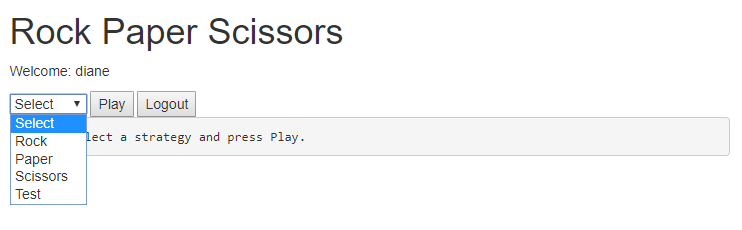
The following shows what appears when each of these options is chosen:
Rock
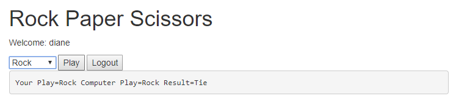
Paper
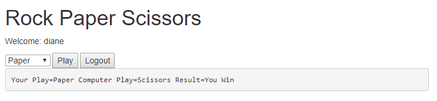
Scissors
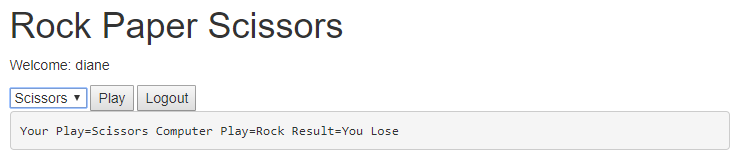
Test
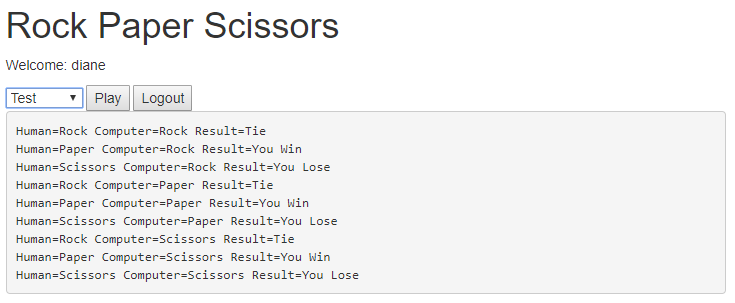
The following code shows how this is executed:
When the user is done, they can hit the “Logout” button, and it redirects them back to the index.php page.<?php // Demand a GET parameter if ( ! isset($_GET['name']) || strlen($_GET['name']) < 1 ) { die('Name parameter missing'); } // If the user requested logout go back to index.php if ( isset($_POST['logout']) ) { header('Location: index.php'); return; } // Set up the values for the game... // 0 is Rock, 1 is Paper, and 2 is Scissors $names = array('Rock', 'Paper', 'Scissors'); $human = isset($_POST["human"]) ? $_POST['human']+0 : -1; //$computer = 0; // Hard code the computer to rock // TODO: Make the computer be random $computer = rand(0,2); // This function takes as its input the computer and human play // and returns "Tie", "You Lose", "You Win" depending on play // where "You" is the human being addressed by the computer function check($computer, $human) { // For now this is a rock-savant checking function // TODO: Fix this if ( $human == 0 ) { return "Tie"; } else if ( $human == 1 ) { return "You Win"; } else if ( $human == 2 ) { return "You Lose"; } return false; } // Check to see how the play happenned $result = check($computer, $human); ?> <!DOCTYPE html> <html> <head> <title>Diane Krauthamer - Rock, Paper, Scissors Game</title> <?php require_once "bootstrap.php"; ?> </head> <body> <div class="container"> <h1>Rock Paper Scissors</h1> <?php if ( isset($_REQUEST['name']) ) { echo "<p>Welcome: "; echo htmlentities($_REQUEST['name']); echo "</p>\n"; } ?> <form method="post"> <select name="human"> <option value="-1">Select</option> <option value="0">Rock</option> <option value="1">Paper</option> <option value="2">Scissors</option> <option value="3">Test</option> </select> <input type="submit" value="Play"> <input type="submit" name="logout" value="Logout"> </form> <pre> <?php if ( $human == -1 ) { print "Please select a strategy and press Play.\n"; } else if ( $human == 3 ) { for($c=0;$c<3;$c++) { for($h=0;$h<3;$h++) { $r = check($c, $h); print "Human=$names[$h] Computer=$names[$c] Result=$r\n"; } } } else { print "Your Play=$names[$human] Computer Play=$names[$computer] Result=$result\n"; } ?> </pre> </div> </body> </html>
bootstrap.php
Last but not least, the bootstrap.php page is included to ensure proper style and functionality of the site. This is not a page that is displayed, but is included in the head of the other PHP files.Here is the code for this bootstrap.php file:
Return to top of page<l!-- Latest compiled and minified CSS --> <link rel="stylesheet"
href="https://maxcdn.bootstrapcdn.com/bootstrap/3.3.6/css/bootstrap.min.css"
integrity="sha384-1q8mTJOASx8j1Au+a5WDVnPi2lkFfwwEAa8hDDdjZlpLegxhjVME1fgjWPGmkzs7"
crossorigin="anonymous"> <!-- Optional theme --> <link rel="stylesheet"
href="https://maxcdn.bootstrapcdn.com/bootstrap/3.3.6/css/bootstrap-theme.min.css"
integrity="sha384-fLW2N01lMqjakBkx3l/M9EahuwpSfeNvV63J5ezn3uZzapT0u7EYsXMjQV+0En5r"
crossorigin="anonymous"> <!-- Custom styles for this template --> <link href="starter-template.css" rel="stylesheet">